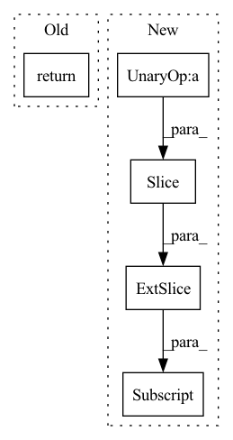

Pattern ID :3232

Before Change
)
logits = self.to_logits(transformer_output)
return logits[:, -self.image_seq_length:, :]
// def forward(self, text_tokens, seg_tokens, img_tokens):
After Change
)
logits = self.to_logits(transformer_output)
return logits[:, -self.image_length:, :]
// def forward(self, text_tokens, seg_tokens, img_tokens):
In pattern: SUPERPATTERN
Frequency: 3
Non-data size: 5
Instances
Fragment ID: 10290682
Project Name: casualganpapers/make-a-scene
Commit Name: 029c4f7e4dc143f105af80e4437c1dd7a09bf91c
Time: 2022-06-16
Author: 87744278+thuangb@users.noreply.github.com
File Name: models/transformer.py
M Class Name: MakeAScene
N Class Name: MakeAScene
M Method Name: forward(4)
N Method Name: forward(4)
M Parent Class: nn.Module
N Parent Class: nn.Module
M File Name: models/transformer.py
N File Name: models/transformer.py
M Start Line: 314
M End Line: 334
N Start Line: 329
N End Line: 352
'>
Before Change
// x = self.bn(x)
x = self.transformer_encoder(x)
return x
After Change
x = self.proj(x)
out = torch.zeros((batch_size, time_steps, self.hidden_dim))
for cur_time in range(time_steps):
cur_x = x[:, : cur_time + 1, :]
cur_x = self.transformer_encoder(cur_x)
out[:, cur_time, :] = torch.mean(cur_x, dim=1)
return out
'>
Fragment ID: 10290677
Project Name: yhzhu99/covid-ehr-benchmarks
Commit Name: ad34074aecfdb4102d004037282e318b42ce4369
Time: 2022-06-25
Author: yhzhu99@gmail.com
File Name: app/models/backbones/transformer.py
M Class Name: Transformer
N Class Name: Transformer
M Method Name: forward(2)
N Method Name: forward(2)
M Parent Class: nn.Module
N Parent Class: nn.Module
M File Name: app/models/backbones/transformer.py
N File Name: app/models/backbones/transformer.py
M Start Line: 37
M End Line: 42
N Start Line: 38
N End Line: 45
'>
Before Change
// // output层
// y_hat = self.out(self.c_t)
// y_hat = torch.sigmoid(y_hat)
return self.c_t
After Change
out = torch.zeros((batch_size, time_steps, self.hidden_dim))
for cur_time in range(time_steps):
cur_x = x[:, : cur_time + 1, :]
out[:, cur_time, :] = self.retain_encoder(cur_x)
return out
'>
Fragment ID: 10290679
Project Name: yhzhu99/covid-ehr-benchmarks
Commit Name: b3d4ba85ad8e8cfeb3e45e07e5fadfa3fd4a25fa
Time: 2022-06-25
Author: yhzhu99@gmail.com
File Name: app/models/backbones/retain.py
M Class Name: RETAIN
N Class Name: RETAIN
M Method Name: forward(2)
N Method Name: forward(2)
M Parent Class: nn.Module
N Parent Class: nn.Module
M File Name: app/models/backbones/retain.py
N File Name: app/models/backbones/retain.py
M Start Line: 64
M End Line: 83
N Start Line: 44
N End Line: 53